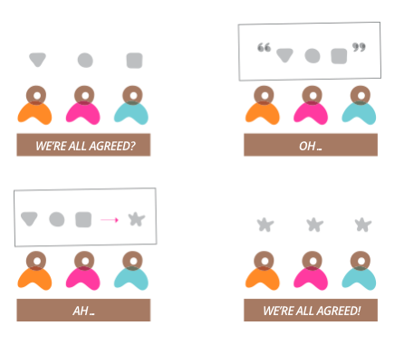

也许你要挑战「设计就是设计」，但你无法改变的是，真实世界里，我们所面对的设计挑战早已超越了设计本身，无论你如何缩小设计师的定义，事实依然不能被改变——我们所处的设计环境，逼迫我们在组织架构中解决社会性问题、在商业模式中解决盈利性问题，而不简单只是个设计问题。
Donald Norman在2010年一篇论文《Why Design Education Must Change》中特别提到：
Many problems involve complex social and political issues. As a result, designers have become applied behavioral scientists, complexity of the issues and the depth of knowledge known.
对设计师而言，设计问题之外还有哪些问题需要面对？设计师又该如何回答这些问题？本篇将列举出3个我认为最重要的问题，以及如何训练。
问题1：如何构建系统
传统设计教育一般不会教你的，是「系统性思考」，系统性思考的核心在于：
- 构建模型（系统中抽象出来的对象）
- 分析正负反馈（对象之间的关系）
无论它是一个Logo的设计、一个品牌、一套界面、或是一个产品策划，衡量质量的重要标准是「可持续」，而真正可持续的，是系统。
建立一个好的系统，有以下几个步骤：
- 收集信息：尽可能地收集多个方面的多种信息；
- 寻找洞察：在海量信息中寻找出关键信息，即洞察（Insights）；
- 抽象对象：将洞察抽象为对象；
- 寻找关系：在对象之间寻找相互间关系（依赖或强化）；
- 抽象关系：将关系进行抽象。
以一个完整的Logo设计过程为例，建立一个围绕在Logo周围的系统逻辑可以是：
- 寻找所有品牌相关的关键字、客群定义、战略目标、观感等多种信息；
- 从诸多信息中抽离出重要的、也许毫无关联的洞察；
- 将这些洞察进行抽象、即概念化；
- 寻找概念之间的关系；
- 抽象这种关系，形成真正的设计方向。
Logo设计师的概念化过程同时也是构建系统的过程。
优秀的设计师虽未经过训练，通过常年的练习和实践形成了自己的系统化思维，在特赞这篇《这个Logo，绝对配得上千万美元融资》文章中讲述了设计师张乐乎的设计过程，也许他并不承认，但这个过程和结果都是系统思维的体现。
一个具有优秀系统思维的设计师可能有如下特点：
- 在海量信息中能够敏感地发现有价值的信息；
- 不止看到一点更不纠结于一点细节，而是更加全面形成平衡的设计观点；
- 快速将复杂的事情变得简单、又可冷静地将简单的事情剖析得复杂；
- 快速地教会别人一件事、或者植入一个理念；
- 设计结果显得完整、丰满、过程令人信服；
- 更快速地学习新的知识、高速地沟通过程。
系统性思维通过多年的实践和重复性工作在潜移默化中形成自己完整的工作方式，如下方式可以更快速地帮助设计师形成自己的系统思维：
- 多做跨领域的探索性研究和考据，强制自己接受海量信息；
- 多读设计领域一些归纳性的论文，而不是实用型文章，前者往往是设计师多年经验的理论沉淀；
- 写作也是形成设计师系统思维的好方式；
- 多涂鸦，随时画下自己抽象的结果（下图）。
问题2：如何帮助决策过程
设计的复杂性导致决策过程更加复杂，一个产品最终从概念到推向市场，可能经历更多的决策过程，产品越大、涉及影响越大、决策过程越复杂。
设计师越来越发现，他们被要求（或主动要求）参与到从头到尾各种决策过程中，并和不同背景的决策者打交道，他们也明白，设计的价值和决策复杂度成正比，即不需要决策的设计就是自说自话，世界上没有即重要的、又不需要决策的设计。
抱怨组织里冗长的决策过程，不如思考作为设计师如何帮助决策过程。设计思维（Design Thinking）的出现究其根本是为了解决设计决策的问题，因为企业一方面越来越需要设计、一方面设计需要涉及到多个组织内部的利益相关者（Stakeholders），以设计思维为代表的一系列设计方法论，帮助设计者和利益相关者克服设计专业技能的局限，一起进行的是设计决策、而不是设计本身。
经常扮演引导者（Facilitator）帮助设计师更好地辅助设计决策，推动设计的最终实现，而不是避免设计决策，期待一个完美设计解决所有问题，当设计在企业中成为普遍行为时，这样的情况越来越不会出现。有以下方式可以作为练习：
- 帮助持不同观点、毫无设计背景的两个人达成一致；
- 把每次对话当作一次达成一致的过程；
- 学习讲故事，Storytelling是设计师不可缺少的技能之一；
- 根据现实情况、精心设计一个设计工作坊，帮助利益相关者达成一致。
 不断练习设计和引导设计工作坊，是学会辅助设计决策的最佳手段。
此外，洞悉各个利益相关者之间诉求的冲突和一致、对各人之间的政治保持敏感度，毕竟设计已经不是一个简单的创作活动或工程活动，而是一个社会性活动（Social Activity）。
问题3：如何驱动设计团队
任何一个重要的设计都不再是一个人可以完成的事情，设计的生命周期也变得更长，从概念产生到持续运营，之中经历多个阶段、有不同专业背景、多达百人参与，设计之外的第三个问题在于，如何有效地驱动设计团队，最终驱动整个设计在不同阶段稳定运行。
这个问题涉及到如何建立设计领导力（Design Leadership）的，很多设计师错误地认为「设计领导力是一个管理的问题，而我只关心技能问题、而不愿朝管理者的方向发展」。事实上，智力工作的发展特点在于「专业和管理」不再是两条泾渭分明的职业发展路线，而是更加融合，没有一个优秀设计师只是一个管理者、或只是一个专家。
驱动设计团队主要包含三个类别的设计问题：
- 管理设计目标（Design Goals）：我们为何设计；
- 管理设计原则（Design Principles）：我们接受和不接受怎样的设计；
- 管理设计方法（Design Approaches）：我们如何达到我们的设计目标。
而对于设计过程、设计结果、和设计细节应是真正设计管理（Design Management）的职责范围。这就使得设计团队全员应对「驱动设计团队」负责，而不是设计领导者——无论职责的大小，都应该保证：
- 对以上三个设计问题有共同的认识；
- 发现认识的偏差应该及时提示和解决；
- 主动改进或调整以上三个设计问题。
作为设计领导者或管理者，应该在设计项目中建立足够宽松的环境，除了管理过程质量和设计产出，帮助团队建立共同的目标、原则、和方法。随着设计过程中所需要的角色越来越多，驱动设计团队将会变得更加重要。
如果你只是一位设计新人？
作为设计新人，缺少基础的设计技能是否还需要考虑设计之外的问题？我的回答是：没有必要的设计技能，你根本无法体会到设计之外的其他问题。因此，磨练自己的设计技能，并保持耐心，对设计之外的三个问题保有必要的认识，你只需要明白的一个道理，「对设计的需要将会越来越复杂，而对设计的结果又要求越来越简单」，处理前者需要设计之外的技能，处理后者则需要扎实的设计技能，缺一不可。